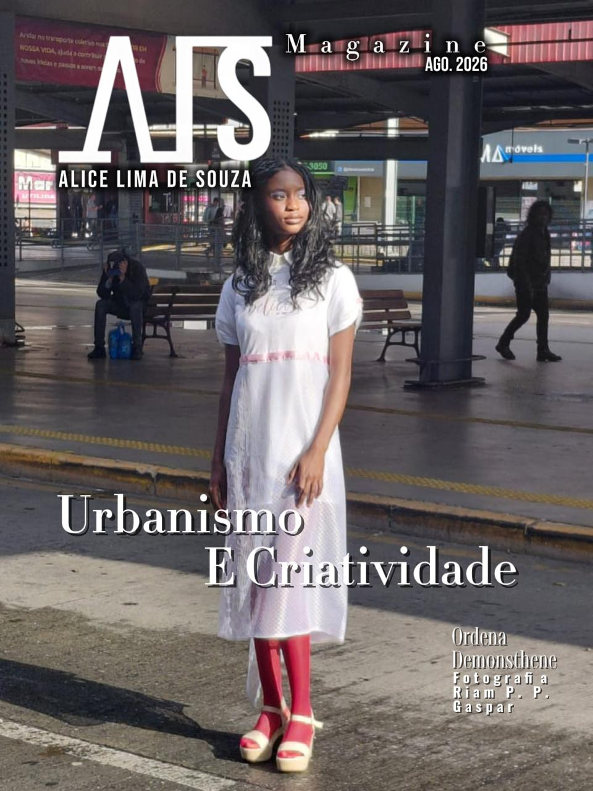

Vestir vai além de moda. Acreditamos em você, na sua identidade, na sua força e no poder de transformar aquilo que veste em expressão.
Luxo sem excesso. Intervenção com quebra de padrões sociais. A A.L.S. nasce entre o cotidiano e o imaginário, buscando transformar o vestir em uma experiência de identidade, movimento e expressão.
Brasileira, nascida em Colombo, Paraná, em 19 de fevereiro de 2011, Alice Lima de Souza é modelo e designer e fundadora da A.L.S.
Aos 15 anos, em 2026, constrói sua visão de moda a partir de experiências pessoais, referências culturais, criatividade e uma relação muito particular com o vestir.
Sua história com a criação começou ainda na infância, quando produzia roupinhas para bonecas e transformava lençóis em possibilidades diante do espelho.
Sua trajetória também é marcada por sua identidade como pessoa transexual e por sua vivência cultural ligada à Umbanda.
Uma temporada construída entre urbanismo, memória, cultura, mitologia e experimentação. A SS2026 apresenta diferentes capítulos da linguagem da A.L.S., culminando no lançamento Grego Culture em setembro de 2026.
Transporte, cotidiano e memória transformados em linguagem de moda no primeiro Fashion Film da temporada.
O grande lançamento de setembro de 2026: uma coleção inspirada na cultura, na estética e na mitologia grega.
Um editorial de campo dedicado ao universo Grego Culture SS2026.
A SS2026 é apresentada através de dois Fashion Films que registram diferentes momentos da construção estética e conceitual da A.L.S.
Um editorial pensado no contexto de urbanismo e moda, realizado no Terminal do Maracanã, em Colombo. O local possui um significado pessoal: foi parte da rotina de Alice e de sua mãe durante grande parte de suas vidas, utilizando o transporte público para deslocamentos ao trabalho, consultas e outros compromissos.
Urbanismo × Moda × Memória
O segundo Fashion Film marca um novo capítulo da A.L.S. e apresenta o lançamento da nova coleção Grego Culture SS2026.
Grego Culture SS2026 × Grécia × Mitologia × Moda
Uma coleção inspirada na cultura grega e na sua mitologia, transformando referências do passado em uma proposta contemporânea de moda.
A escolha da Grécia nasce de uma relação profunda com a mitologia grega, que sempre marcou o imaginário da designer. Deuses, histórias, esculturas, formas, tecidos e símbolos tornam-se referências para construir uma nova narrativa visual dentro da A.L.S.
Vestidos e conjuntos produzidos 100% à mão, explorando tecidos fluidos, estampas marcantes e detalhes desenvolvidos especialmente para cada peça. A coleção busca unir o imaginário da Grécia antiga à identidade contemporânea da marca.
Entre ideias em sala de aula do ensino médio surgiu uma amizade entre a modelo e designer Alice e o jovem Ryan. Ambos sabiam seus talentos e, com muitas ideias e um colega que sabia bons ângulos de câmera, nasce o primeiro editorial e fashion film capturados por ele.
Nascido e criado em Colombo, no Paraná, Ryan sempre teve um dom: ser artista. Em seus artesanatos, suas colagens e seus desenhos divertidos, não poderia deixar de ter participação nos trabalhos da marca A.L.S.
A A.L.S. teve sua primeira exposição em desfile acompanhada de palestra, apresentando a identidade da marca, sua visão de mercado e diferentes reflexões sobre como a moda pode se posicionar e agir no mercado.
Curitiba — Paraná
11 de agosto de 2026
Apresentação da marca + palestra + desfile de uma única peça exclusiva.

Um editorial de campo dedicado ao universo Grego Culture SS2026.
Grego Culture SS2026 — em destaque nas mídias e nos novos capítulos da A.L.S.
A identidade visual da A.L.S. trabalha com a tranquilidade do azul, a força do preto, a pureza do branco e referências visuais ligadas à água e à luz. Feita de pessoas reais, diversidade, corpos, gêneros, idades, rostos, peles e diferentes histórias. A marca busca levar luxo e glamour a todas as pessoas.
Para informações sobre a A.L.S., projetos, moda, editoriais e trabalhos: